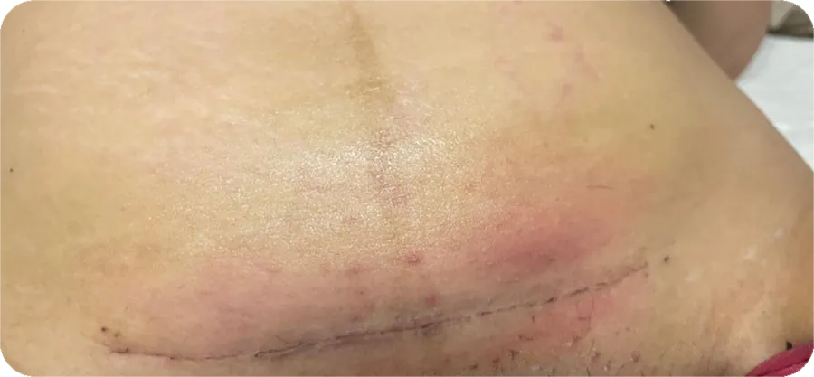
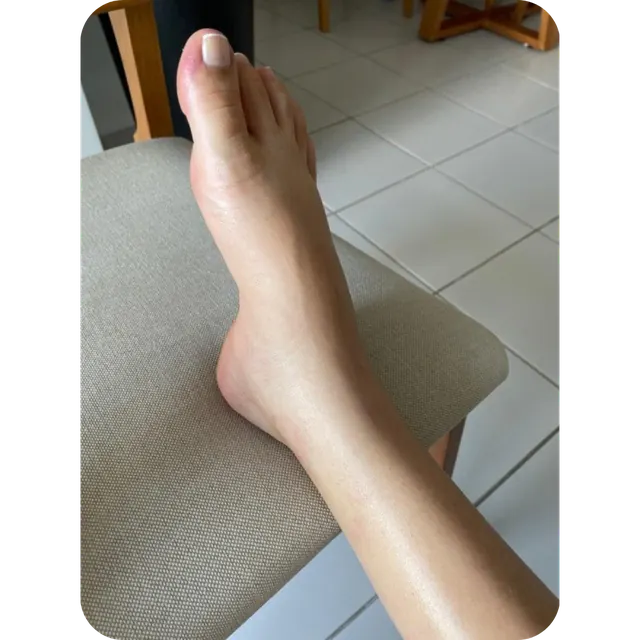

Cada recurso tem um motivo.
Nada aqui é aplicado por padrão.
Antes de qualquer técnica, eu avalio. O que eu aplico em você é escolhido para o seu corpo, para o seu parto, para o seu momento. Deixa eu te mostrar o que tenho disponível para a sua recuperação:
Reabilitação Fisioterapêutica — o coração do acompanhamento
Seu corpo passou por 9 meses de adaptações e por um evento físico intenso. Ele precisa de um olhar clínico para conduzir o processo de reabilitação.
- Exercícios iniciados ainda na maternidade
- Reabilitação abdominal progressiva
- Ajustes posturais, ergonômicos e de transferências para o seu dia a dia
- Programa de exercícios terapêuticos domiciliares estruturados com suporte via WhatsApp
- Olhar clínico para intercorrências
“A primeira vez que você se levantar após o parto não precisa ser assustadora.”
Taping Contensivo (pós-parto)
Reduz o inchaço (edema), promove estabilidade abdominal, diminui as tensões sobre a cicatriz da cesárea, consequentemente ajuda no processo de cicatrização, proporciona mais conforto e segurança na hora de sentar para amamentar, levantar, caminhar, segurar o seu bebê e realizar os seus cuidados pessoais. O uso de cinta não é recomendado no pós-parto. O taping contensivo é a alternativa clínica mais adequada — e os resultados são visíveis em dias.


“Sua cicatriz merece cuidado para evoluir com qualidade.”
Laserterapia
O laser de baixa potência controla a fase inflamatória, ajuda no processo de cicatrização e tem ação analgésica. Atua na condução da ferida operatória da cesárea, lesões perineais, além das fissuras mamilares, facilitando o processo de amamentação.



Drenagem Linfática (pré e pós-parto)
Reduz o edema, melhora a circulação e alivia a sensação de peso e cansaço nas pernas. Um momento de cuidado exclusivo — necessário e merecido.


“Os resultados são visíveis já na primeira sessão.
O inchaço diminui. A dor alivia. Você se sente bem.”